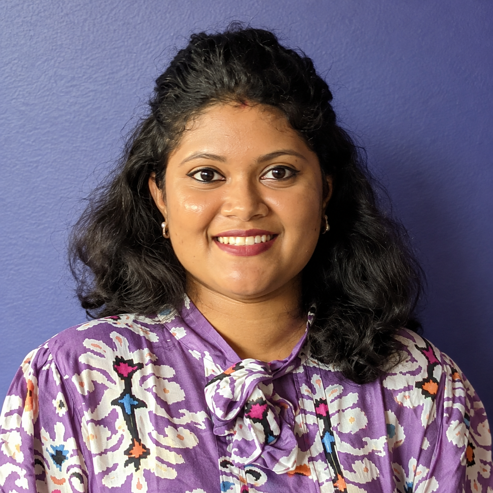

2024 — Present
PhD in Computing Science
Kansas State University · Manhattan, Kansas, USA
All But Dissertation (ABD).

PhD Candidate in Computing Science
Kansas State University
I am a PhD candidate in Computing Science (ABD) at Kansas State University.
I explore how AI models learn, make decisions, and internally represent information. My research focuses on making AI systems more interpretable, reliable, and understandable beyond their predictions.
I also enjoy building practical tools, collaborating across disciplines, and sharing knowledge.
Kansas State University · Manhattan, Kansas, USA
All But Dissertation (ABD).
Chittagong University of Engineering & Technology (CUET), Bangladesh
CGPA: 3.89 / 4.00 · Departmental Merit Position: 1st / 120
K-State AI Consultation Services (KAICS) · Kansas State University
Provide research-oriented AI consultation to faculty, staff, and graduate students, and develop tutorials on emerging AI topics, tools, and technologies.
Data Semantic Lab · Kansas State University
Conducted research under the Game-changing Research Initiation Program (GRIP), contributing to “Towards a Global Food Systems Data Hub: Seeding the Center for Sustainable Wheat Production.”
Department of Computer Science & Engineering · CUET, Bangladesh
Courses: Software Engineering, Computer Graphics, Programming for Planners, Electrical Devices and Circuits.
Department of Computer Science & Engineering · East Delta University, Bangladesh
Courses: Computer Graphics, Digital Image Processing, Pattern Recognition, Compiler Design, Object-Oriented Programming, and Operating Systems.
Avishek Das, M. S. Sarma, Mohammed Moshilul Hoque, Nazmul Siddique, M. Ali Akber Dewan
Sensors, vol. 24, p. 5862
S. S. Aonty, K. Deb, M. S. Sarma, P. K. Dhar, T. Shimamura
IEEE Access, vol. 11, pp. 42343–42360
M. S. Sarma, K. Deb, P. K. Dhar, T. Koshiba
Applied Sciences, vol. 11, no. 5, p. 2149
M. S. Sarma, Pascal Hitzler, Eugene Y. Vasserman
20th Conference on Neurosymbolic Learning and Reasoning (NeSy 2026) · arXiv
Avishek Das, M. S. Sarma, Mohammed Moshilul Hoque
IEEE International Women in Engineering (WIE) Conference on Electrical and Computer Engineering (WIECON-ECE)
S. S. Aonty, M. S. Sarma, K. Deb
4th International Conference on Electrical, Computer & Telecommunication Engineering (ICECTE)
M. Sen Sarma, A. Das
4th International Conference on Networking, Information Systems & Security (NISS2021)
A. M. Uddin, A. Al Miraj, M. S. Sarma, A. Das, M. M. Gani
2021 IEEE Region 10 Symposium (TENSYMP)
N. Gelal, A. Gautam, S. Abadifard, N. Giordano, M. S. Sarma, et al.
arXiv preprint
Abhilesha Dalal, M. S. Sarma, Avishek Das, Samatha E. Akkamahadevi, Eugene Y. Vasserman, Pascal Hitzler
Neuro-Symbolic AI: Bridging the Gap Between Neural Networks and Symbolic Reasoning · Elsevier book chapter
Adrita Barua, Avishek Das, M. S. Sarma, Pascal Hitzler
Neuro-Symbolic AI: Bridging the Gap Between Neural Networks and Symbolic Reasoning · Elsevier book chapter
M. S. Sarma, S. E. Akkamahadevi, P. Hitzler
13th International Conference on Knowledge Capture (K-CAP 2025), USA
M. S. Sarma, A. Gautam, N. Gelal, et al.
Posters, Pinot and Partnership Session on Enabling Technologies and Global Food Security and Biosecurity, Kansas State University, USA
A hybrid retrieval-augmented generation system combining knowledge-graph retrieval, semantic vector retrieval, and LLM-based generation.
Automatic image caption generation with a web interface for captioning user-provided images.
CNN- and LSTM-based web application for classifying five traditional Bengali sports activities from video.
Projects in object localization, neural style transfer, and multi-task learning for handwritten digit and color prediction.
Python · C/C++ · Java · SQL
PyTorch · TensorFlow · Scikit-learn
CNNs · SDXL · FLUX · Diffusion
Concept Induction · ECII Tool
Hugging Face · OpenAI API · RAG · GraphRAG · Transformers
Neo4j · RDF · OWL · SPARQL · Protégé
Qdrant · GraphDB · MySQL
Docker · Kubernetes · Git · FastAPI
Key achievements: